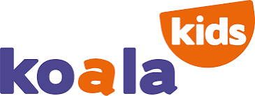

🎓 Parcours de formation
Les supports à voir en priorité, dans l'ordre. Vos supports vus sont cochés.
1L'itinérance ludique
2Les oralités
3L'observation
…3 / 8 vus

Les supports à voir en priorité, dans l'ordre. Vos supports vus sont cochés.